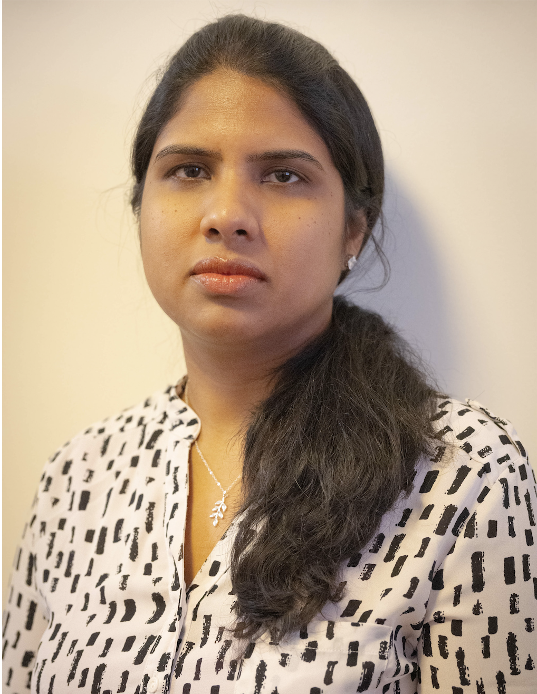

I am a Senior Language Modeling Engineer at Bloomberg AI, where I build entity-linking systems for financial domain. My research interests include human-aligned evaluation for text generation, controllable generation, synthetic data generation, and robust entity-linking. At Bloomberg, my work spans training entity-linking systems on new domains, developing benchmarks for complex reasoning over structured databases (STARQA), distilling LLMs into efficient production systems for named entity recognition and linking, and building data-centric frameworks for synthetic training data generation.
I completed my Ph.D. in Computer Science at Georgia Institute of Technology focused on building and evaluating controllable models for text simplification. During my doctoral research, I developed LENS, a learned evaluation metric for text simplification, and created controllable generation models that balance different simplification operations for diverse user groups and domains. My research also encompassed neural approaches for entity-aware text understanding and handling noisy social media text.